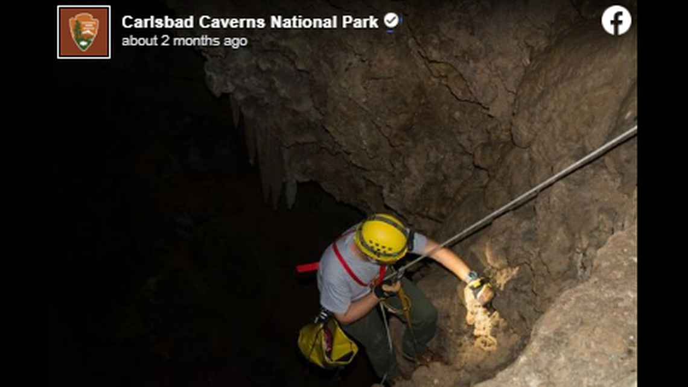

The Pit Containment Unit, also known as the PCU is a govermental organization dedicated to protecting our world from the threat of bottomless pits.
Pit Containment Unit
Warning!
A warning to all Pit enthusiasts. We strongly encourage you to ignore these feelings of curisosity. Bottomless pits have yet to be fully examined and continue to contain unexplained mysteries. Unsupervized exploration may lead to bodily injury or death.
Pit Theories
There are many theories and or conspiricies surrounding the subject of bottomless pits. In order to keep the public informed we have listed some of the more plausible ones.
TheoriesPit Explorations
Since the founding of the PCU a number of both manned and unmanned expeditions into the depths of these unnatural pits have been undertaken. We list our findings for the public here.
Explorations